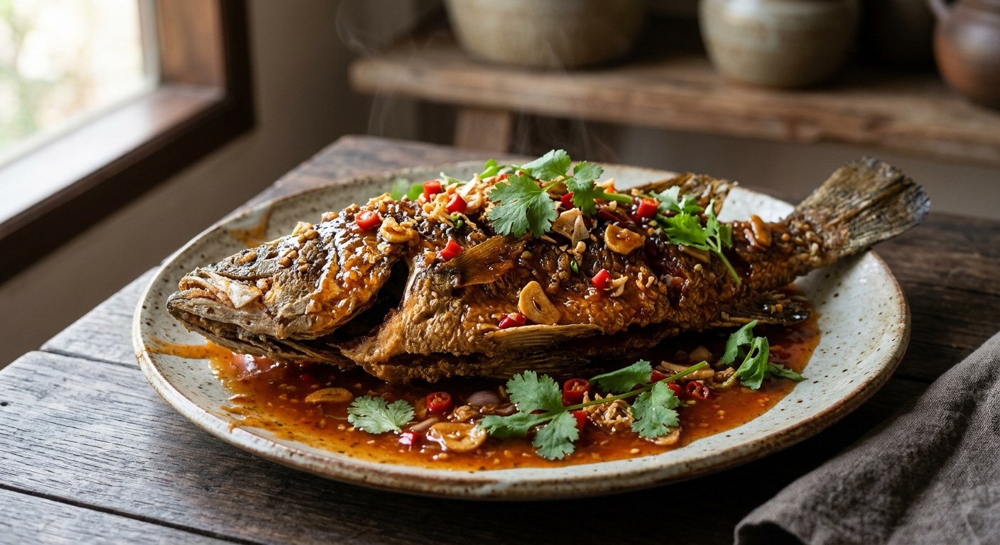

A whole fish deep-fried until the skin crackles, dressed at the table with a glossy hot sweet-sour chilli sauce — the four-cornered balance of sour, salty, sweet and heat that every Thai source calls สามรส.

ปลาราดพริก means exactly what it does: pla (fish), rad (poured over), prik (chilli). The name hides the dish's real subject, which is the sauce. It is the Thai kitchen's most famous สามรส — the three flavours of sour, sweet and salty, backed by heat — built in the wok in minutes from garlic, coriander root and fresh chillies, then balanced with tamarind, fish sauce and palm sugar until it turns glossy and clings to the fish like a glaze.
The fish matters too, and every source treats it the same way: scale it, gut it, and บั้ง it — score the flesh with diagonal cuts on both sides — so it fries evenly and the sauce runs into the cuts instead of off the skin. A salt rub before it hits the oil keeps the skin from sticking and seasons as it cooks.
The dish spans the whole of Thai cooking, which is why the recipes disagree so cheerfully. The from-scratch school pounds fresh garlic, coriander root and chillies (Wongnai's home cook, TrueID's version of the same, and Pim's kitchen). The shortcut school starts from a bottle of sweet chilli dipping sauce and adjusts it with vinegar and fish sauce — Wongnai's editorial recipe says so outright, and Sanook's version was written for a weeknight. And Kapook's curry-paste pot swaps the fresh chilli for red curry paste entirely, making ปลาราดพริกแกง: same fish, same pour, different heat.
| Thai | English | Amount |
|---|---|---|
| ปลากะพง / ปลานิล | Whole sea bass or tilapia, cleaned and scored | 1 (~800 g) |
| น้ำมันสำหรับทอด | Oil for deep-frying | 1 L |
| เกลือป่น | Salt, for rubbing the fish | ½ tsp |
| กระเทียม | Garlic, finely chopped or pounded | 3 tbsp |
| รากผักชี | Coriander roots, finely chopped | 1 tbsp |
| พริกจินดาแดง | Red bird's eye chillies, chopped or pounded | 5 |
| น้ำตาลปี๊บ | Palm sugar | 2–3 tbsp |
| น้ำมะขามเปียก | Tamarind water | 2–3 tbsp |
| น้ำปลา | Fish sauce | 1½ tbsp |
| น้ำเปล่า | Water | ½ cup |
| พริกชี้ฟ้าแดง | Red spur chilli, sliced, for garnish | 1 |
| ผักชี | Coriander leaves, to garnish | A few sprigs |
The shortcut pot (Wongnai editorial): one cup of ready-made sweet chilli dipping sauce replaces the whole seasoning — fried with Thai garlic, coriander root and five red chillies, loosened with tamarind and water. The restaurant pot (ครัวบ้านพิม): 200 g palm sugar plus 50 g white sugar, half a cup of thick tamarind, a quarter cup of pickled garlic brine and a third of a cup of pickled garlic cloves — the brine doing the souring alongside the tamarind. The curry pot (Kapook): red curry paste pounded from dried chillies, shallots, garlic, galangal, lemongrass, kaffir lime zest and shrimp paste, fried and poured over the same crisp fish.
The sauce base. From scratch — garlic, coriander root and fresh chilli pounded and fried (Wongnai's home cook, TrueID, Pim) — or from a bottle: Wongnai's editorial recipe makes a cup of ready-made sweet chilli dipping sauce the main event, and Sanook's Ching does the same, adjusting with vinegar, sugar and fish sauce. Kapook leaves fresh chilli out altogether and fries red curry paste instead. All six still call the pour the same thing.
The sour. Tamarind water is the standard (Wongnai, TrueID, Pim, Wongnai editorial). Sanook reaches for white vinegar — sharper and faster. Pim doubles up, adding a quarter cup of pickled garlic brine, which sours and seasons at once. The restaurant version is noticeably more sour than the home version.
The sweet. From two tablespoons of palm sugar (Wongnai's home cook) to six (TrueID) — and Pim's restaurant kitchen uses 200 g of palm sugar plus 50 g of white sugar for a single fish. The sauce is sweet in every version; the disagreement is only about how much the diner can take.
The chillies. Red bird's eye chillies alone (Wongnai editorial, Pim), bird's eye plus red spur chilli (Wongnai's home cook), bird's eye plus spur chilli for garnish (TrueID). Sanook says add as many as you like — or none at all if you cannot take the heat.
The fish. Sea bass in the Wongnai and Sanook pots, tilapia in Pim's and TrueID's. Both work because both hold their shape in the oil; the sources argue about price and availability, not flavour.
This recipe is translated from the following Thai-language sources. Where they disagree, we've said so.
1. Wongnai — "วิธีทำ ปลาราดพริก สามรส เมนูปลาทอดเข้มข้นครบรส" (the editorial shortcut pot; the three-amigos note) — wongnai.com
2. Wongnai — "ปลากระพงราดพริก" by นาง สุประวีณ์ รัตนะ (the from-scratch three-flavour pot; the recipe used here) — wongnai.com
3. ครัวบ้านพิม — "ปลานิลทอดราดพริกสามรส" (the restaurant pot; pickled garlic and its brine) — pim.in.th
4. TrueID Food — "ปลาทอด ราดพริกสามรส" (the blended-paste pot; the hot-oil frying times) — food.trueid.net
5. Sanook — "ปลากะพงทอดกรอบราดพริก 3 รสฉบับเร่งด่วน" by ชิ้ง (the vinegar and cornflour shortcut) — sanook.com
6. Kapook Cooking — "ปลาราดพริกแกง เมนูปลาทอดรสเผ็ด" (the curry-paste version, ปลาราดพริกแกง) — cooking.kapook.com